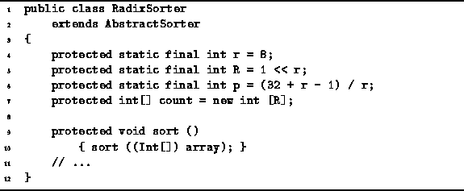
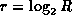
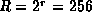
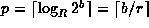
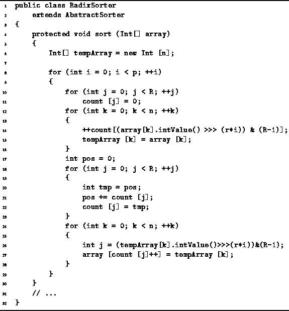
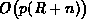

Data Structures and Algorithms
with Object-Oriented Design Patterns in Java
Data Structures and Algorithms
with Object-Oriented Design Patterns in Java
Program  introduces the RadixSorter class.
The RadixSorter class extends the AbstractSorter class
defined in Program .
This radix sorter is designed to sort specifically
an array of Ints.
introduces the RadixSorter class.
The RadixSorter class extends the AbstractSorter class
defined in Program .
This radix sorter is designed to sort specifically
an array of Ints.

Program: RadixSorter fields.
Three static final fields are declared in the RadixSorter class--R, r, and p. The constant R represents the radix and . The constant p is the number sorting passes needed to sort the data. In this case r=8 and . Therefore, a radix-256 sort is being done. We have chosen R as a power of two because that way the computations required to implement the radix sort can be implemented efficiently using simple bit shift and mask operations. In order to sort b-bit integers, it is necessary to make  sorting passes.
One more field is defined in the RadixSorter class--count. The count field is an array of integers used to implement the sorting passes. An array of integers of length R is created and assigned to the count array.
Program also defines the no-arg sort method.
It casts the array to an array Ints
and calls the sort(Int[]) method defined in Program .

Program: RadixSorter class sort method.
The sort(Int[]) method shown in Program
begins by creating a temporary array
of Ints of length n.
Each iteration of the main loop corresponds to one pass
of the radix sort (lines 8-29).
In all p iterations are required.
During the  pass of the main loop
the following steps are done:
First, the R counters are all set to zero (lines 10-11).
This takes O(R) time.
Then a pass is made through the input array during which
the number of occurrences of each radix-R digit in the
pass of the main loop
the following steps are done:
First, the R counters are all set to zero (lines 10-11).
This takes O(R) time.
Then a pass is made through the input array during which
the number of occurrences of each radix-R digit in the  digit position are counted (lines 12-16).
This pass takes O(n) time.
Notice that during this pass all the input data is copied
into the temporary array.
digit position are counted (lines 12-16).
This pass takes O(n) time.
Notice that during this pass all the input data is copied
into the temporary array.
Next,
the array of counts is transformed into an array of offsets
according to Equation .
This requires a single pass through the counter array (lines 17-23).
Therefore, it takes O(R) time.
Finally, the data sequence is permuted by copying the values
from the temporary array back into the input array (lines 24-28).
Since this requires a single pass through the data arrays,
the running time is O(n).
After the p sorting passes have been done, the array of data is sorted. The running time for the sort method of the RadixSorter class is . If we assume that the size of an integer is 32 bits and given that R=256, the number of sorting passes required is p=4. Therefore, the running time for the radix sort is simply O(n). That is, radix sort is a linear-time sorting algorithm.
 Copyright © 1998 by Bruno R. Preiss, P.Eng. All rights reserved.
Copyright © 1998 by Bruno R. Preiss, P.Eng. All rights reserved.